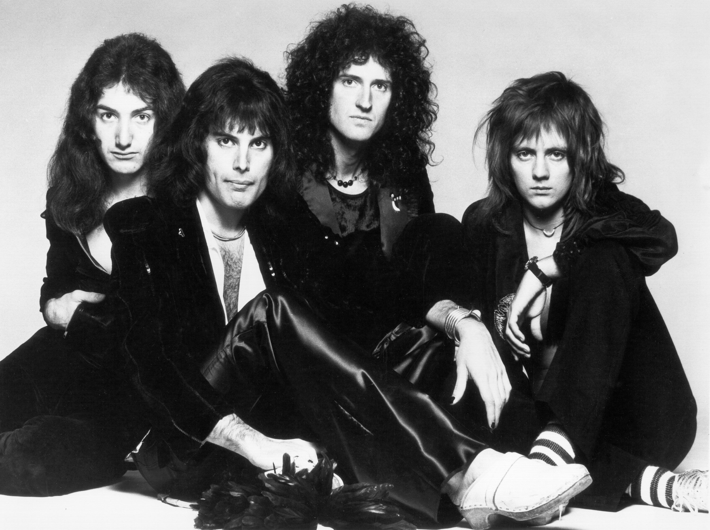

Queen
Banda britanica de rock formada en 1970 en Londres

Integrantes del grupo
Brian May
Freddie Mercury
John Deacon
Roger Taylor
Discografia
Grandes exitos de Queen
Año
Disco
1975
A night at the Opera
1986
A kind of magic
1989
The Miracle
"A Kind of Magic" fue el album mas exitoso
sitio web oficial
www.queenonline.com